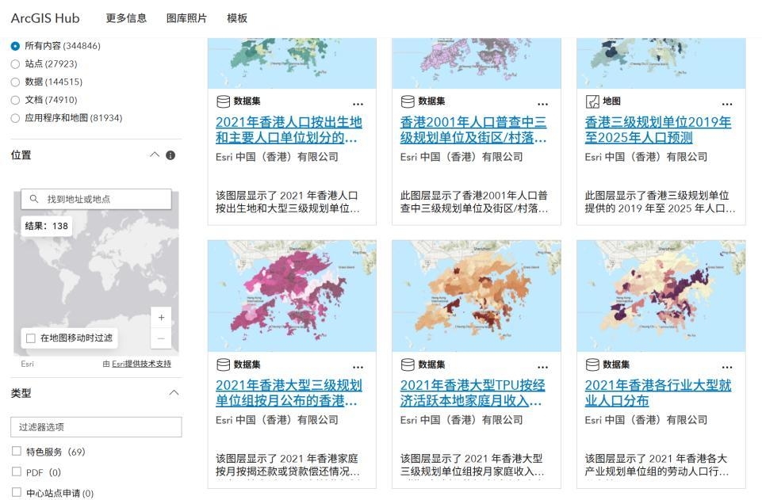
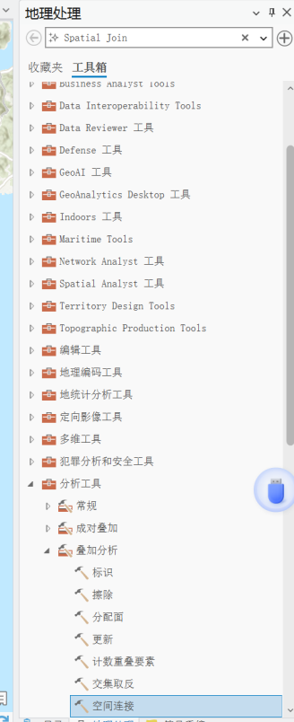
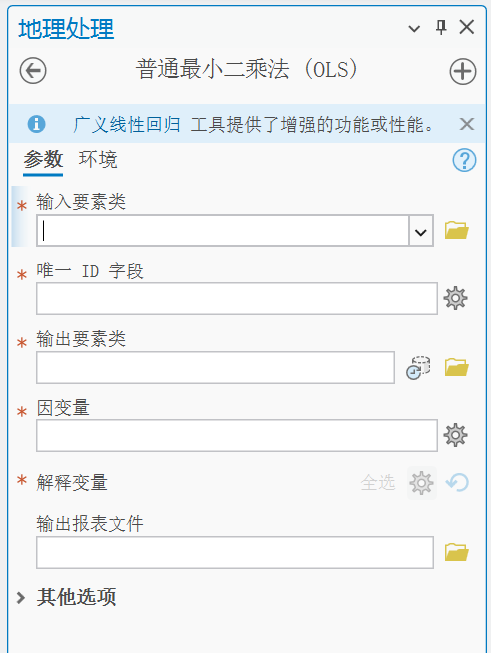
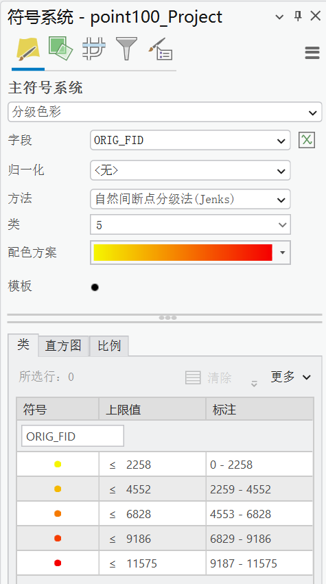
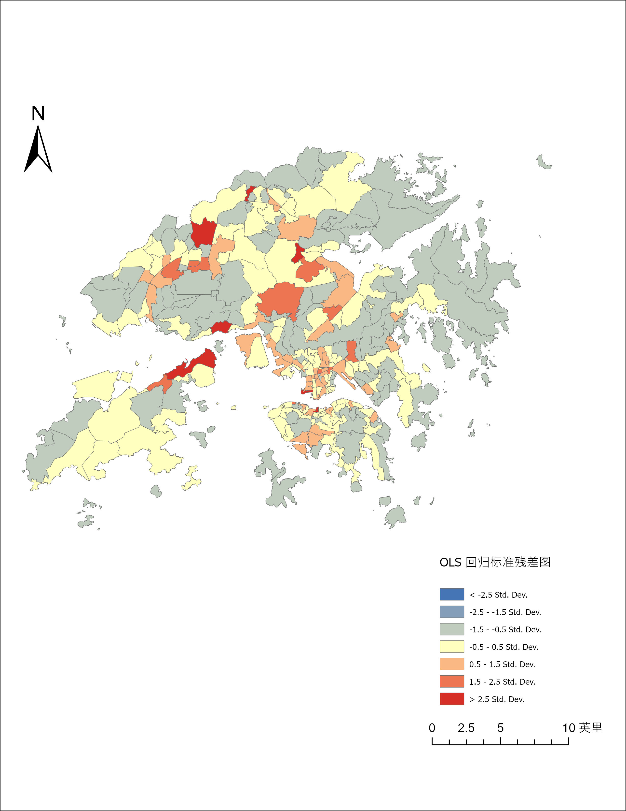

研究图层说明
以 TPU 为空间统计单元，使用交通流量作为因变量，并将就业岗位、人口和 POI 等变量进行空间对齐。标准残差用于识别模型对实际交通需求低估或高估的区域。
共 292 个 TPU 面单元；红色单元代表观测交通量显著高于模型预测。
以 TPU 为空间统计单元，使用交通流量作为因变量，并将就业岗位、人口和 POI 等变量进行空间对齐。标准残差用于识别模型对实际交通需求低估或高估的区域。
将就业和人口等按 TPU 编号统计的表格与香港 TPU 边界进行属性连接，建立回归解释变量的基础数据表。

将离散 POI 点与 TPU 面进行空间连接，统计每个空间单元中的设施数量，形成 POI 密度解释变量。

在 ArcGIS Pro 的 Ordinary Least Squares 工具中指定输入面、唯一 ID、交通流量因变量与就业/人口/POI 等解释变量，输出回归结果与报告。

以 StdResid 为字段采用发散色带分级：接近零的区域为中性色，正残差区域转为暖色，高正残差作为空间需求痛点重点识别。


StdResid = (观测值 − 预测值) / 残差标准差